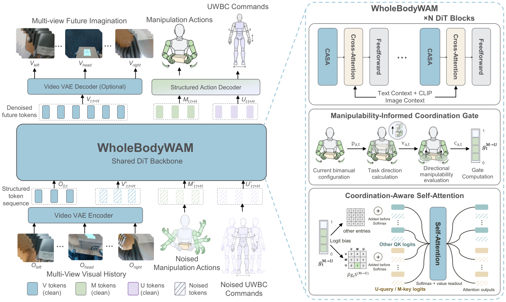

WholeBodyWAM
不同全身控制器的指令语义不一样；先给它们一张共用的槽位表，预训练的操作先验才搬得过去。
WholeBodyWAM: Generalizing Pre-trained World-Action Priors to Humanoid Loco-Manipulation via WBC-Grounded Coordination
SIMPLE 六项仿真任务整体成功率 91.9%，Cosmos-3 86.4%、Ψ0 82.2%；真机八项分布外 68.8% 对 40.0%。
01这篇要解决什么？
这一篇的切口不在模型更大，而在接口：三条全身控制器对同一个动作的指令写法不同，策略学到的语义就没法复用。它把这些指令排进一张有固定物理含义的槽位表，再让操作意图在手臂能力不够时去牵引全身指令。
02先看一个场景
同一条把托盘端起来的动作，换一台全身控制器就要重写：一台收下肢关节参考，一台收底盘速度加根部高度，一台还要一个转向标志位。把这些量直接拼成一个平铺的动作向量喂给策略，换控制器就得重学一遍指令约定，预训练学到的操作先验一点也搬不过去。
03方法怎样运转？

- 01
三条类型化流共用一个扩散 Transformer
视觉 token、操作 token 与 UWBC token 在每个未来步共享一个预测块，由同一个扩散 Transformer 联合生成。操作流保留预训练 WAM 原有的视觉到操作通路，出手臂关节目标与手指关节角；UWBC 流是新加的，让面向控制器的全身行为单独可寻址。
- 02
UWBC：46 维共享槽加 10 维残余槽
共享槽的物理含义写死：底盘线速度与角速度各 3 维、朝向正余弦 2 维、骨盆平面位置 2 维、骨盆高度 1 维、骨盆倾角 2 维、躯干相对骨盆姿态 3 维，其后是 15 维下肢与腰部关节位置、15 维关节速度。索引 46 到 56 留给各控制器自己的量，不支持的字段一律掩掉。
- 03
三条控制器各自落在哪些槽位上
SONIC 用关节空间的 16 到 46 槽；AMO 把平面速度映到 0 到 2、朝向映到 6 到 8、绝对高度映到第 10 槽、躯干姿态映到 13 到 16，转向标志进残余槽；GEAR WBC 的偏航角速度放在第 5 槽。每换一个控制器重做一次任务级微调，只激活演示里有的字段。
- 04
CASA：按方向可操作度决定要不要动全身
先从相邻两帧末端位置估出任务方向，再用带阻尼的可操作度矩阵算出该方向上的能力，与离线体素化可操作度图的参考值比，得到 0 到 1 的下降比例，左右手取较大者作门控。门控乘一个固定强度加成注意力 logit 偏置，只作用在同一块内操作键到 UWBC 查询这一个方向上。
- 05
后训练与部署预算
从 140 亿参数的预训练 WAM 出发，在 SIMPLE 里用 PICO 4 Ultra 与腕部追踪器采一万五千条全身演示，每条经 GMR 重定向到 G1，再按各槽位预定义的语义算出监督值。只训一层秩 4 的 LoRA，5 万步；下游每项任务再用 100 条演示微调。
backbone = pretrained_WAM_14B() # 现成：世界-动作先验，只加一层 LoRA(r=4) 适配
u = zeros(56) # UWBC：46 维共享槽 + 10 维残余槽
u[0:3], u[3:6] = base_lin_vel, base_ang_vel
u[6:8], u[8:10], u[10] = heading_sin_cos, pelvis_xy, pelvis_height
u[11:13], u[13:16] = pelvis_tilt, torso_to_pelvis
u[16:31], u[31:46] = lower_q, lower_qdot # 下肢与腰部关节位置 / 速度
u[46:56] = controller_specific # 含离散控制模式
g = max_over_arms(1 - clip(c_dir / c_ref_voxel, 0, 1)) # 方向可操作度下降比例
logits = QK^T/sqrt(d) + M_nat + beta * g * S_manip_to_uwbc # 只加强这一个方向
v, m, u = DiT_joint(视觉历史, 机器人状态, 语言指令) # 三流同块联合流匹配
wbc.send(mask_by_capability(u, target_wbc), m) # SONIC / AMO / GEAR
# 没有成功检测器与重试；分布外那次踏步重抓，论文称为涌现而非模块设计方法与结果的原文定位见本页引用。
04跟着这个场景走一遍
教学推演：回到上面的场景。第一步，端托盘这件事被拆成三条流：视觉流预测未来画面，操作流沿用预训练 WAM 原有的通路出手臂关节目标与手指角，UWBC 流单独负责面向控制器的全身指令，三者在同一个扩散 Transformer 的同一个预测块里联合生成。第二步，UWBC 把各家控制器的方言收进一张表：前 46 维物理含义写死，底盘线速度与角速度、朝向正余弦、骨盆平面位置与高度、骨盆倾角、躯干相对骨盆姿态，再接 15 维下肢腰部关节位置与 15 维速度；剩下 10 维残余槽留给各家自己的量，包括离散控制模式。第三步，换控制器就是换激活哪些槽：SONIC 吃 16 到 46 的关节空间，AMO 只吃平面速度、朝向、绝对高度与躯干姿态，转向标志进残余槽，GEAR WBC 把推导出的偏航角速度放在第 5 槽，没被支持的字段一律掩掉。第四步，托盘偏远、手臂在任务方向上够不动的时候，CASA 才起作用：门控按可操作度相对参考值的下降比例开合，乘一个固定强度加到注意力 logit 上，只加强同一块内操作到 UWBC 这一个方向，于是全身跟着操作意图动起来。第五步，这一切都建在现成件上，训练只有一层秩 4 的 LoRA 跑 5 万步，加上一万五千条在 SIMPLE 里采的演示。这里要停一下：偏置强度、门控常数、模态损失权重与体素图分辨率论文都没有给出，真机八项任务的成功判据与阶段划分同样没有给出，真机对照也只有 DreamZero 一条。
05实验到底表现怎样？
仿真在 SIMPLE 上跑六项任务、三档扰动，表 2 报的是配 SONIC 时的整体成功率；真机是 Unitree G1 配两只 BrainCo Revo 2 灵巧手、头部与双腕 RealSense，八项任务分同分布与分布外两档。每个方法与任务的组合跑 20 次。
作者报告的实验结果 · v1
| 表 2 · SIMPLE 六项任务（配 SONIC） | MovePick | PickBetweenTables | 整体 |
|---|---|---|---|
| DreamZero | 70/65/55 | 50/45/35 | 65.0% |
| Cosmos-3 | 90/85/80 | 85/80/70 | 86.4% |
| Ψ0 | 90/85/75 | 75/70/60 | 82.2% |
| WholeBodyWAM | 95/90/85 | 95/90/80 | 91.9% |
| 去掉结构化动作分解 | 85/80/70 | 80/75/65 | 80.8% |
原始证据：UWBC 槽位表：§III-C、表 1 ↗ · CASA 与门控：§III-D ↗ · 仿真结果与消融：表 2 ↗ · 真机同分布与分布外：表 3 ↗
同分布下操作主导的任务差距很小，桌面收拾是 90% 对 85%；需要大幅移动躯干的任务差距才拉开，箱体转运差 40 个点，篮筐搬运与门口通过各差 35 个点。分布外的掉幅也不同，12.5 个点对 17.5 个点。
06收益来自哪里，又停在哪里？
消融与机制证据
六项仿真任务上，去掉 CASA 从 91.9% 掉到 86.9%，把 UWBC 换回 SONIC 原生指令掉到 84.7%，把操作流与 UWBC 流合成一条容量相当的单一流掉到 80.8%。掉得最多的是最后这项，说明分开寻址比接口语义本身更要紧。
结论的适用边界
模型来源几乎全部现成：主干是那条 140 亿参数的预训练 WAM，文本编码器 T5、视频 VAE Wan、重定向工具 GMR、仿真环境 SIMPLE，以及被对齐的三条全身控制器 SONIC、AMO 与 GEAR WBC 都不是这篇训的。作者训练的只有 LoRA 那一层适配与一个轻量状态编码器，加上一万五千条在 SIMPLE 里采的全身演示与每项任务 100 条下游演示，这两笔数据才是真正的前提成本。把成绩读成方法收益之前有几处要扣住：CASA 的偏置强度、门控里的小常数、各模态损失权重与体素图分辨率论文都没有给出；真机那八项任务的成功判据与阶段划分也没有给出，而进度这一指标是直接沿用 ω-0 的定义；真机对照只有 DreamZero 一条；跨控制器那组是每条控制器各自单独微调后再比的。表 2 的格子来自 SIMPLE 的三档扰动，而 SIMPLE 原文里同名任务报的是十次试验的计数，这里换成了百分比与每组 20 次，两张表不能直接并排。分布外那次踏步重抓，论文明说演示里没有、称之为涌现行为，属于单例观察。
07放回全书的脉络
对照 RoboHarness 的交接状态：那边要把上一条策略留下的构型推进下一条的支撑区，这边要把同一份意图翻译成不同控制器认得的槽位。
08把阅读变成一个小研究
给手上两套控制器各写一张槽位表，标出哪些字段真的共享语义、哪些只能放进残余槽。
先自己回答：这项实验怎样才有解释力？
多数情况下共享的字段比预想的少，差异集中在朝向与高度的参考系上。先把参考系对齐，再谈跨控制器复用。
- 用自己的话说出这篇改变了哪个模块。
- 画出它的输入、输出和一次失败如何被处理。
- 复述一个结果，同时说清基线、指标与实验条件。这一问不给答案，材料在第 05 节。
先自己答，再看前两问的参考答案
这篇改了哪个模块改的是动作输出的组织方式，不是世界模型本身，也不是任何一条全身控制器。预训练 WAM 的视觉到操作通路原样保留，另开一条面向控制器的 UWBC 流，两者与视觉流在同一个扩散 Transformer 里联合生成。被换掉的是把异构控制器指令平铺成一个动作向量的做法：改成一张 46 维共享槽加 10 维残余槽的语义表，不支持的字段掩掉。再加一个按方向可操作度开合的注意力偏置，只在手臂于任务方向上能力不足时才加强操作到 UWBC 的信息流。控制器仍然自己负责平衡与落脚。
输入、输出与一次失败如何被处理输入是视觉历史、当前机器人状态与一句语言指令：视觉经预训练的 Wan 视频 VAE 压成潜在视频 token，文本走预训练 T5 编码器再以交叉注意力进入，机器人状态由一个轻量状态编码器变成本体条件 token。输出是三条并行的流，每个未来步共享一个预测块：未来视觉动态、操作动作（手臂关节目标与手指关节角）、以及 56 维 UWBC 指令。落到硬件上的只有后两条——UWBC 按目标控制器的能力档案激活对应字段，其余掩掉，再交给 SONIC、AMO 或 GEAR WBC 换成实际关节命令，平衡与落脚仍归控制器。失败在系统里没有显式通路：没有成功检测器，没有重试逻辑，也没有恢复子目标。论文报的唯一一次恢复是分布外的观察——托盘支架被挪远 10 厘米后一次伸手没够着，模型接着向前迈一小步、调整躯干再抓一次；作者说明这个序列不在演示里，把它归为预训练操作先验与全身协调耦合后的涌现行为，而不是某个模块的设计结果。评测侧的失败处理是外部的：进度按首次失败或不可逆偏离之前的阶段数来算。
不同全身控制器的指令语义不一样；先给它们一张共用的槽位表，预训练的操作先验才搬得过去。
↗带着位置回到原文
首发日期用于时间排序；以下方法与结果对应 v1。数据为论文作者报告，本讲义没有独立复现实验。
QA就这一页提问或讨论
对某个数字、某条边界或某个推演有疑问，欢迎直接留言：讨论按页面分开，回复会保留在 XinrunXu/awesome-agentic-robotics-papers 的 Discussions 里，需要一个 GitHub 账号。